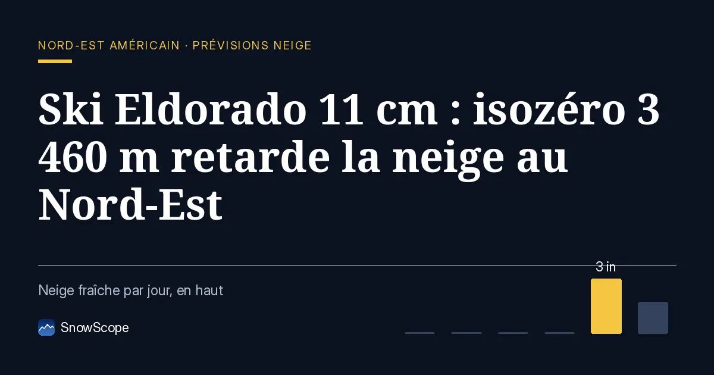

Ski Eldorado 11 cm : isozéro 3 460 m retarde la neige au Nord-Est
Ski Eldorado domine le Nord-Est avec 11 centimètres de neige fraîche prévus, mais il y a un problème : l'isozéro est aujourd'hui à 3 460 mètres, plus de trois kilomètres au-dessus du sommet à 797 mètres. Les maths sont impitoyables - il tombe de la pluie, pas de la neige. D'ici le 8 novembre, l'air refroidit suffisamment pour que l'isozéro tombe autour de 720 mètres, et la neige arrive.
Consultez les prévisions neige en temps réel pour Ski Eldorado sur l'application SnowScopeHauteurs de neige, alertes poudreuse et carte 3D, gratuitement.
Pas de neige quand l'isozéro domine à 3 460 mètres
Aujourd'hui, l'isozéro atteint 3 460 mètres à son maximum. Le sommet de Ski Eldorado se situe à 797 mètres. Quand l'isozéro est plus haut que la montagne, les précipitations sont de la pluie, pas de la neige - c'est une règle sans exception. C'est le cas au Nord-Est les 6 et 7 novembre. Le modèle de prévision affiche zéro centimètre de neige fraîche le 7 novembre parce que toutes les précipitations tombent sous forme de pluie. Les satellites et les mesures au sol le confirment. Ski Eldorado s'est montré sans neige pour la dernière fois le 1er novembre. Une station près de Tuckerman a enregistré zéro centimètre le 2 novembre à 372 mètres d'altitude. Le schéma est bloqué : de la pluie partout jusqu'à ce que l'air refroidisse suffisamment pour que la neige commence aux sommets.
Les prévisions régionales soulignent le problème. Sur 111 stations du Nord-Est, aucune n'a de neige aujourd'hui. D'ici le 9 novembre, seulement 11 sont prévues pour voir de la neige. Ce n'est pas un événement généralisé ; c'est un événement d'altitude.
| Station | Hauteur de neige | Neige fraîche, 72 h | Attendu, jours suivants | Sommet |
|---|---|---|---|---|
| Ski Eldorado | 0 in (0 cm) | 0 in (0 cm) | 4 in (11 cm) | 2 615 ft (797 m) |
| Tuckerman Ravine | 0 in (0 cm) | 0 in (0 cm) | 4 in (10 cm) | – |

L'isozéro s'effondre le 8 novembre, la neige arrive
Le 8 novembre, l'isozéro s'effondre. Le modèle montre qu'il descend d'environ 2 290 mètres à un minimum de 720 mètres en début de matinée - un écart de plus de 1 500 mètres en quelques heures. Quand l'air froid s'engouffre de manière aussi brutale, la neige remplace la pluie. Les prévisions pour Ski Eldorado passent de zéro centimètre le 7 novembre à 7 centimètres le 8 novembre. L'isozéro remonte à 2 450 mètres en début d'après-midi (pas rare par temps de transition), mais à ce moment-là, la neige s'est déjà accumulée aux sommets.
Le 9 novembre continue. L'isozéro reste plus bas, estimé autour de 1 500 mètres. Les prévisions ajoutent 4 centimètres supplémentaires. Cela donne à Ski Eldorado un total de 11 centimètres : rien jusqu'au 7 novembre, tout le 8 et 9 novembre. Les plus hautes altitudes reçoivent un peu plus (prévision 5 centimètres pour la semaine à venir) que les pentes intermédiaires et de base (4 centimètres chacune) parce que l'isozéro n'est en dessous de chaque zone que brièvement.
Seuls les plus hauts sommets du Nord-Est voient de la neige
Tuckerman Ravine suit de près avec 10 centimètres prévus. Au-delà de ces deux-là, le signal s'affaiblit. Le modèle prédit que seulement 11 stations sur les 111 du Nord-Est enregistreront des chutes mesurables d'ici le 9 novembre - moins d'une sur dix. La zone enneigée est prévue pour atteindre 460 kilomètres carrés, ce qui semble conséquent jusqu'à ce que vous réalisiez que cela reflète seulement les sommets, pas les stations complètes. Les vallées basses et les pentes exposées au sud resteront nues pendant cet événement.
Ce que voient les satellites et les stations au sol
Les données satellites sont peu nombreuses mais révélatrices. Ski Eldorado s'est montré dégagé pour la dernière fois le 1er novembre : pas de neige. La dernière vue dégagée de Tuckerman est plus ancienne, le 27 octobre, montrant également aucune couverture significative à ce moment-là. Les stations au sol sont d'accord. Jackson, à 9 kilomètres de Tuckerman à 372 mètres d'altitude, a mesuré zéro centimètre le 2 novembre et n'a vu aucune neige fraîche au cours des trois derniers jours. Toutes les sources pointent dans la même direction : le Nord-Est n'a pas de neige au sol aujourd'hui. La première neige mesurable visible aux satellites devrait apparaître aux sommets d'ici le 8 ou 9 novembre si le modèle de prévision se confirme.
La neige de début de saison est fine et exige du respect
Le 7 novembre est décevant - de la pluie à toutes les altitudes. Le 8 novembre, c'est l'événement : la neige atteint les sommets de Ski Eldorado et Tuckerman et quelques autres hauts pics, mais n'attendez pas grand-chose. Préparez-vous à une couche mince, une mauvaise adhérence entre la neige fraîche et le sol gelé en dessous, et des cailloux qui affleurent. D'ici le 9 novembre, les choses sont plus stables. Onze centimètres sur les pentes supérieures des stations principales offrent un vrai terrain, mais les altitudes plus basses restent surtout à nu.
Si vous vous aventurez hors-piste pendant cette transition, consultez le bulletin officiel d'avalanche de votre région. La neige de début de saison se comprime mal sur le sol mouillé, créant des couches faibles et cachant les rochers. Ces 11 centimètres sont réels, mais les conditions restent délicates pendant quelques jours.
Conseils aux skieurs
- 7 novembre : pluie partout - restez en vallée ou hors des pentes.
- 8 novembre : guettez la neige aux sommets vers 720 m d'isozéro ; préparez-vous à une couche mince avec une mauvaise adhérence sur la glace.
- Consultez le bulletin officiel d'avalanche avant de partir hors-piste ; la neige de début de saison se comprime mal sur le sol mouillé, créant des couches faibles et cachant les rochers.
- À partir du 9 novembre, 11 cm aux pentes hautes des meilleures stations offrent un ski plus sûr ; les pentes basses restent nues.
- Ces premières neiges sont fragiles - les rochers peuvent émerger à travers 11 cm, surtout en altitude basse où la base est fine.
À propos de ces chiffres
Les hauteurs de neige des stations sont la neige la plus épaisse sur le haut du domaine, d'après le modèle de neige SnowScope (environ 1 km, calcul du 6 novembre) ; ce sont des estimations pour une zone, pas une mesure en un point. Les valeurs des stations de mesure sont mesurées à la date indiquée. Les prévisions peuvent changer. Consultez toujours le bulletin d'avalanche officiel avant le hors-piste.
Bulletins d'avalanche officiels: Mount Washington Avalanche Center
Citer ce bulletin
Pour la recherche, l'enseignement ou la presse : chiffres et graphiques réutilisables librement sous CC BY 4.0 avec cette citation.
SnowScope (2026), Ski Eldorado 11 cm : isozéro 3 460 m retarde la neige au Nord-Est, https://snowscope.app/blog/fr/2026/11/us-northeast-snow-forecast-6-november-2026.html, consulté le 2026-11-06
SnowScope (Atlas Labs). (2026, November 6). Ski Eldorado 11 cm : isozéro 3 460 m retarde la neige au Nord-Est. SnowScope snow reports. https://snowscope.app/blog/fr/2026/11/us-northeast-snow-forecast-6-november-2026.html
BibTeX
@misc{snowscope2026usnortheastsnowforecast6,
author = {{SnowScope (Atlas Labs)}},
title = {Ski Eldorado 11 cm : isozéro 3 460 m retarde la neige au Nord-Est},
year = {2026},
month = nov,
howpublished = {\url{https://snowscope.app/blog/fr/2026/11/us-northeast-snow-forecast-6-november-2026.html}},
note = {Published 2026-11-06 14:00 UTC; accessed 2026-11-06}
}· CC BY 4.0 · Méthodes, données et outils →
Ski Eldorado : neige et température selon l'altitude, cet hiver vs l'hiver dernier (outils) →
Suivre Ski Eldorado
Gratuit : un message quand la neige arrive, et la météo chaque matin.